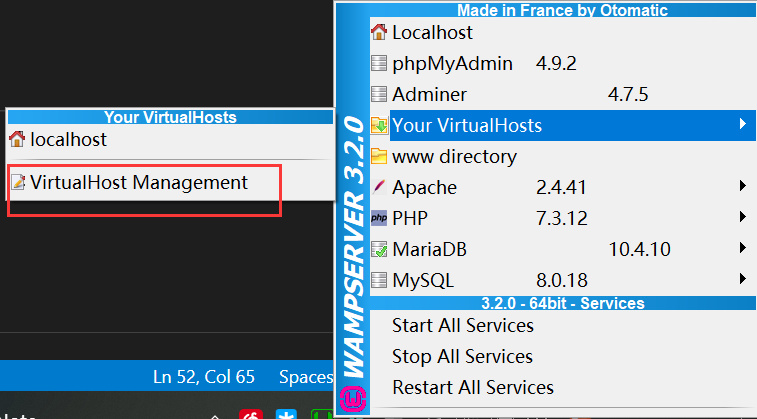
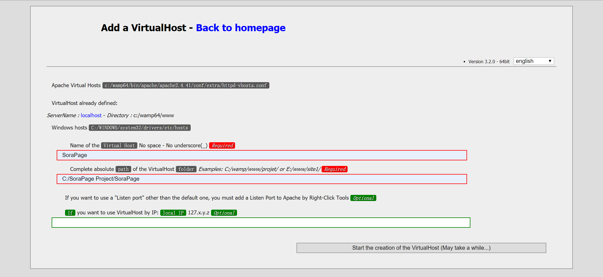
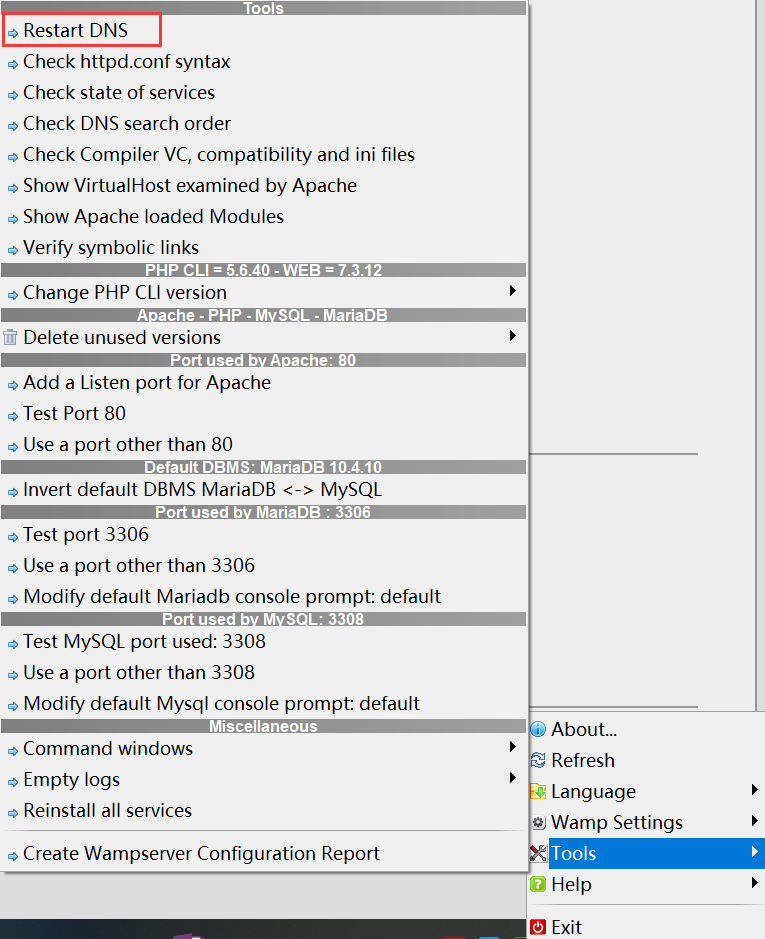
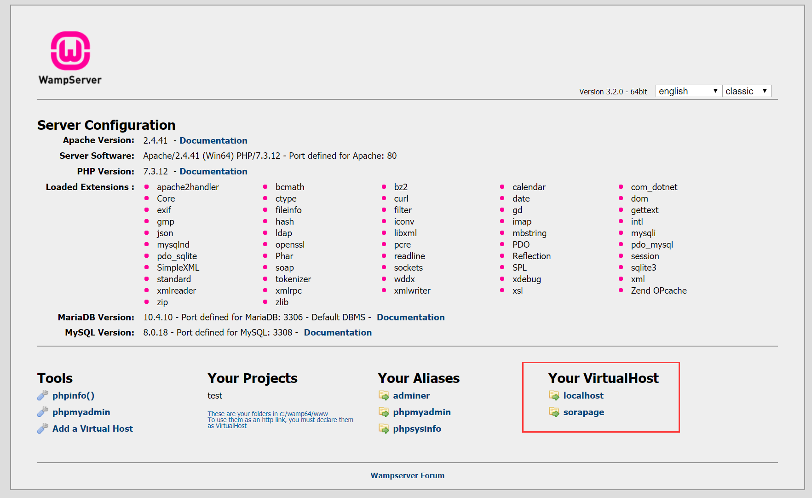
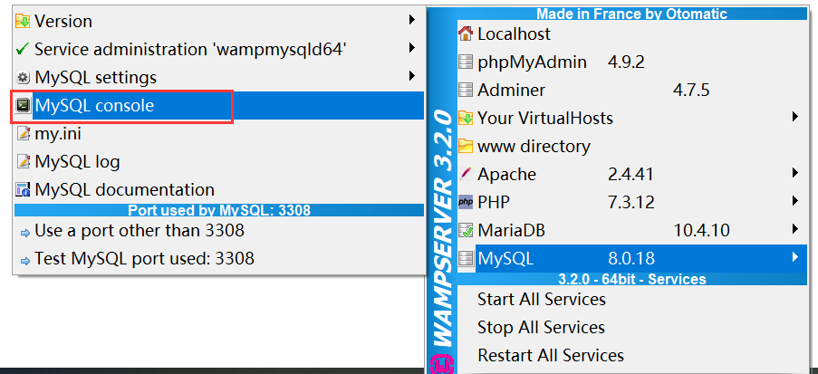
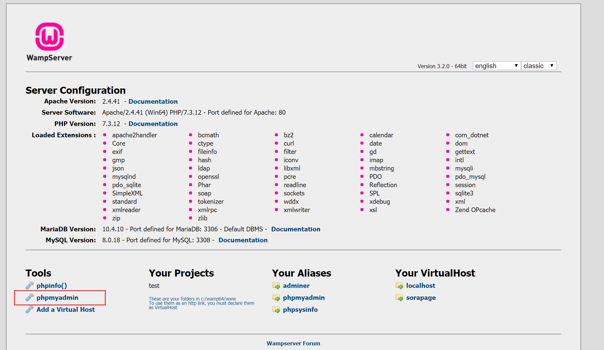
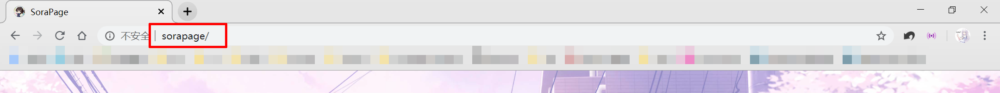
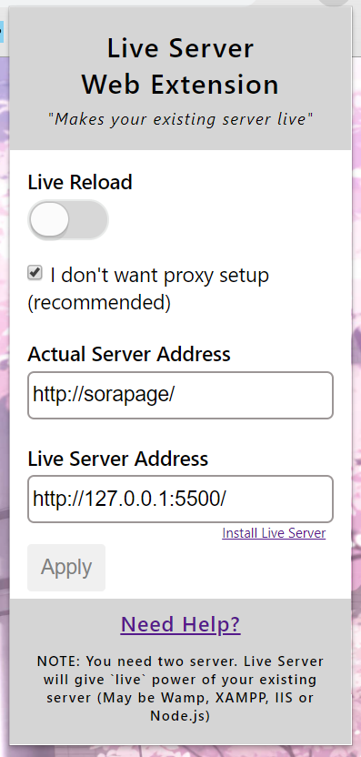
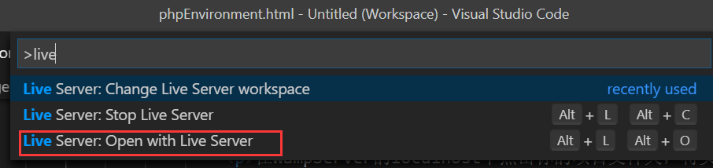
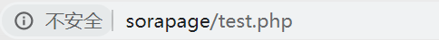

RE:从零开始的PHP+SQL本地开发
最后更新：
PHP是运行在服务器端的语言，在服务器端一般是采用LAMP的系统环境，在Windows系统下需要搭建本地LAMP环境才能开发。
Windows常用的搭建本地服务器的软件是WampServer，以及日常使用VSCode充当编译器，再加上一个实时预览的VSCode插件LiveServer，基本上就能从零搭建起一个顺手的PHP开发环境。
简而言之，PHP+SQL本地开发环境 = WampServer + VSCode + LiveServer
WampServer
开始之前，简单介绍下WAMP的概念，Windows Apache MySQL PHP，各取首字母就是WAMP。其实完全可以一个个地安装这几样再组装起来搭建本地环境，但中间的配置步骤貌似很麻烦，因此会诞生出WampServer这样的一键组装应用。
Step-1：下载和安装
在官网下载，在安装时只需要记得勾选安装MySQL（默认安装MariaDB）就可以一路确认。
Step-2：启动
安装完成后，打开这个软件，如果成功运行的话，任务栏的图标是会呈现绿色的。
看到那抹绿色后，在浏览器地址栏中输入localhost就能打开WampServer的配置界面（也可以左键点击任务栏图标，第一个就是localhost）
Step-3：添加项目文件夹
要想把自己的项目文件夹添加到WampServer的启动目录中的话，需要左键点击任务栏图标，在Your VirtualHosts菜单中选择VirtualHost Management
然后把弹出网页中的两个红框框填了就行了，第一个框填的是项目名称，就是显示在主配置界面的项目名称，和文件夹不同名也没问题，第二个框填的就是文件夹的绝对路径，格式参考示例。
Step-4：重启DNS
创建VirtualHost之后，还需要重启DNS，右键任务栏图标,Tools菜单中点击Restart DNS
Step-5：打开项目文件夹
在localhost的主配置页面，点击相应的项目文件夹即可访问
访问数据库
默认账户是root，没有密码MySQL终端
左键任务栏图标，在MySQL子菜单中点击console
phpMyAdmin
localhost的主配置页面中，Tools一栏中就能找到
LiveServer插件
VSCode上的LiveServer拓展可以实时刷新html和php页面，直线提升码代码的体验。
原生的LiveServer拓展只支持html的动态刷新，要想实现PHP的刷新功能，需要在Chrome或Firefox上下载配套的插件
PS：在看插件作者的YouTube教程时，地道的印度口音英语真是让人欲罢不能。
Step-1：安装插件
Step-2：配置插件
-
在WampServer的localhost中点击你的项目文件夹，将页面的URL（地址栏中的地址）复制备用
 -
在VsCode中随便用LiveSever原版拓展打开一个html文件，将前面的数字复制备用

然后把复制的两个URL，填入chrome插件的框框内,Apply后Live Reload
Step-3：使用插件
用VsCode打开要码代码的PHP文件，按F1搜索liveserver,点击Open with live server
在localhost界面打开项目文件夹，然后在地址栏里输入你PHP文件的路径即可
完